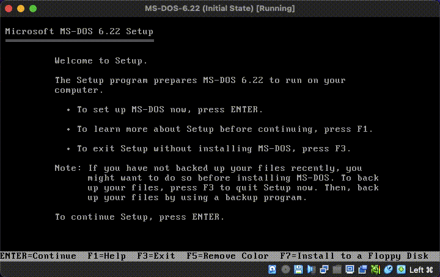
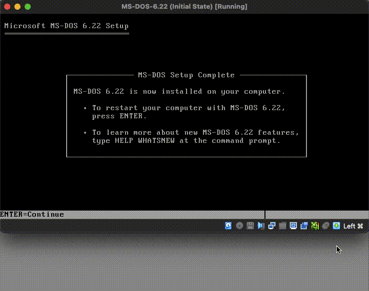

1994's MS-DOS 6.22 was the last standalone DOS product sold by Microsoft. It's the foundation for 1993's Windows 3.11, which is the earliest OS that 1996's Internet Explorer 3 can run on.
This how-to guide will help you install MS-DOS 6.22 as a virtual machine on Oracle VirtualBox. After creating an MS-DOS 6.22 virtual machine, you'll be able to install Windows 3.11. Check out our how-to guide:
This how-to guide is targeted at macOS Monterey on an Intel MacBook. Other recent macOS versions should work very similarly.
If you're on Linux, Solaris or Windows, just ignore the Mac-specific parts of this guide. The VirtualBox parts should work similarly on all platforms.
I. Install VirtualBox
Download VirtualBox 7.0 or later from virtualbox.org - about 130 MB
Double-click the downloaded 'VirtualBox-7.0.8-156879-OSX.dmg'
Double-click 'VirtualBox.pkg' in the window which pops up
Click 'Continue' -> click 'Install'
Enter your Mac's password -> click 'Install Software'
Wait for 'The installation was successful' -> click 'Close'
'Do you want ...' -> click 'Keep', you may need 'VirtualBox_Uninstall.tool'
Command-W to close the 'VirtualBox' window
Eject the 'VirtualBox' volume
UNINSTALLING: If you need to uninstall VirtualBox, double-clicking the 'VirtualBox_Uninstall.tool' just shows a popup saying '...Apple cannot check it for malicious software'. Instead of double-clicking, Control-click 'VirtualBox_Uninstall.tool' -> click 'Open', which shows a similar popup but this time with an 'Open' button. Also note that after 'VirtualBox_Uninstall.tool' finishes running, you may still need to delete:
II. Optionally, hide VirtualBox 7's 'Notification Center' overlay
VirtualBox 7 often shows a 'Notification Center', overlaying the right side of the virtual machine's window. Here's a slightly hacky way to prevent it from appearing:
In the Finder, Command-Shift-U, to open the 'Utilities' folder
Start typing 'ter...' to find the 'Terminal' app -> Command-O to open it
Type VBoxManage getextradata global GUI/SuppressMessages and Return
You should see 'No value set!'. This confirms that VBoxManage exists, and shows that the following step has not already been done.
Type VBoxManage setextradata global GUI/SuppressMessages all and Return
Press the UpArrow key twice to show VBoxManage getextradata ... and Return
This time you should see 'Value: all', confirming that setextradata worked
Command-Q to quit Terminal -> Command-W to close the 'Utilities' window
VirtualBox 7 has a second 'Notification Center', which overlays the right side of the 'VirtualBox Manager'. There doesn't currently seem to be a way to keep it hidden, but luckily it rarely gets in the way.
III. Create a new virtual machine in 'Guided Mode'
In the Finder, Command-Shift-H to open your home folder in a new window
You should see there is currently no 'VirtualBox VMs' folder
Command-Shift-A to open the 'Applications' folder
Start typing 'virt...' to find the 'VirtualBox' app -> Command-O to open it
You should see the 'Oracle VM VirtualBox Manager' window
Click the 'New' icon
Name: MS-DOS-6.22
Folder: [keep the default, '/Users/<my-username>/VirtualBox VMs']
ISO Image: <not selected> [the default]
Type: Other [selected automatically when you type 'MS-DOS' in the Name]
Version: DOS [selected automatically when you type 'MS-DOS' in the Name]
Click 'Next'
Base Memory: 128 MB -> Processors: 1 -> click 'Next'
Under 'Create a Virtual Hard Disk Now', Disk Size: 256.00 MB -> click 'Next'
Click 'Finish' - you should see 'MS-DOS-6.22 Powered Off' in the sidebar
HOT TIP: When naming a new virtual machine, only use digits 0-9, uppercase and lowercase letters A-Z and a-z, hyphens '-', dots '.' and underscores '_'. VirtualBox will use the virtual machine name as a filename, and characters outside the range [-._0-9A-Za-z], can cause headaches later on. The space character ' ' is especially bad.
IV. Create an initial snapshot
Click the menu icon to the right of 'MS-DOS-6.22' -> click 'Snapshots'
You should just see 'Current State'
Command-Tab to the 'Finder' -> Command-Shift-H to open your home folder
Double-click the new 'VirtualBox VMs' folder
You should see it contains just one item, the 'MS-DOS-6.22' folder
Double-click the 'MS-DOS-6.22' folder - you should see three files:
MS-DOS-6.22.vbox (2 KB)
MS-DOS-6.22.vbox-prev (1 KB)
MS-DOS-6.22.vdi (2.1 MB)
Command-Tab to 'VirtualBox' -> click the 'Take' icon
Snapshot Name: 'Initial State'
Snapshot Description: 'Before starting up for the first time.' -> click 'Ok'
You should see 'Initial State' in the snapshots list, with 'Current state' nested underneath
Command-Q to quit VirtualBox Manager (good practice before backing up)
In the 'MS-DOS-6.22' folder, you should see that a 'Snapshots' folder has been added. Inside is a .vdi file (2.1 MB).
Command-UpArrow, to the 'VirtualBox VMs' folder
Control-click the 'MS-DOS-6.22' folder -> 'Compress 'MS-DOS-6.22'
Note that the compressed .zip file is tiny - only about 9 KB. Compression works really well on the Virtual Disk Image (.vdi) files, because they're currently empty. Your .zip archive files will be much bigger later, when the .vdi files contain data.
DOWNLOAD: The 'ms-dos-6.22-initial-state.zip' archive is available here.
V. Grab your assets!
In the 'VirtualBox VMs' folder, Command-Shift-N to create a new folder
Command-Shift-N -> type: 'MS-DOS-6.22-Assets' -> press the Return key
Download the .7z file to your new 'MS-DOS-6.22-Assets' folder
Double-click the .7z file to extract the folder containing floppy-disk images
You should see the 'Microsoft MS-DOS 6.22 Plus Enhanced Tools (3.5)' folder
Double-click that folder - you should see nine files, all dated late 2014:
Disk1.img (1.5 MB)
Disk1.jpg (108 KB)
Disk2.img (1.5 MB)
Disk2.jpg (106 KB)
Disk3.img (1.5 MB)
Disk3.jpg (105 KB)
Microsoft MS-DOS 6.22 Plus Enhanced Tools (3.5).txt (233 B)
Suppdisk.img (1.5 MB)
winworldpc.com.txt (691 B)
VI. Get to the 'Microsoft MS-DOS 6.22 Setup' screen

The MS-DOS 6.22 Setup screen, after pressing F5 to turn the background black. Watch the full animated GIF
Command-Option-D to toggle the macOS dock into view
Click on the 'VirtualBox' icon to reopen the VirtualBox Manager
If not already selected, click once on 'MS-DOS-6.22' to select it
Click its 'Settings' icon -> Storage
Under 'Controller: Floppy', click 'Empty'
Under 'Attributes', click the small floppy disk icon on the right
Click 'Choose a disk file...'
For any popups like '“VirtualBox” would ... folder.', click 'Don’t Allow'
Select 'Disk1.img' from the folder of unzipped .7z files -> click 'Open'
You should see 'Empty' has changed to 'Disk1.img' -> click 'OK'
Note that 'Disk1' is a boot disk. VirtualBox has already created an appropriate BIOS on the virtual machine, and it expects a boot disk to be inserted when it powers up.
Click the 'Start' icon (the main part, not the small down-arrow)
You should see a white on blue page headed 'Microsoft MS-DOS 6.22 Setup'
At the top of your screen, 'View' -> 'Virtual Screen 1' -> 'Scale to 150%'
Press fn-F5 to turn the background black. This is less painful on the eyes, and also confirms that VirtualBox's keyboard-capturing is working.
Click on the MS-DOS window - your mouse pointer will actually disappear, because MS-DOS is text only!
If 'You have clicked ...' appears, tick 'Do not show...' -> click 'Capture'
By default, the 'host key' is the Left Command key. Press it now to check that you can get your mouse cursor back.
HOT TIP: VirtualBox virtual machines run as their own individual application, named 'VirtualBox VM'. You could actually quit the 'VirtualBox Manager' app, and all your virtual machines would continue running.
VII. Install MS-DOS 6.22 from the virtual floppy-disks

The MS-DOS 6.22 Setup screen, after completing the installation, and before restarting. Watch the full animated GIF
The 'Microsoft MS-DOS 6.22 Setup' screen should be saying 'press ENTER'
Press the Return key. Some keyboards have an Enter key in addition to a Return key, and some apps treat them differently. But in this context, the MS-DOS virtual machine treats a Return-press the same as an Enter-press.
Keep 'Configure unallocated disk space (recommended)' selected
Press the Return key again
Step VI.9. above inserted 'Setup Disk 1' into drive A, so press Return
Wait for 'Formatting drive C' to complete (about 30 seconds)
Optionally, edit 'Date/Time', 'Country' or 'Keyboard Layout' -> press Return
Accept the default 'C:\DOS' by pressing Return
Wait for 'Please insert ... Setup Disk #2' to appear (about 30 seconds)
Press the 'host key' to get your mouse cursor back
Click the small floppy disk icon in the row of icons under the VM window
Click 'Choose a disk file...'
For any popups like '“Terminal” would like ... folder.', click 'Don’t Allow'
Select 'Disk2.img' from the folder of unzipped .7z files -> click 'Open'
Press Return -> wait for 'Please ... Setup Disk #3' to appear (~30 seconds)
This time, choose 'Disk3.img' -> click 'Open'
Press Return -> wait for 'Remove disks ...' to appear (~30 seconds)
Click the floppy disk icon again -> click 'Remove disk from virtual drive'
Press Return -> you should see a 'MS-DOS Setup Complete' message
Press Return
VIII. Deal with an unresponsive restart
This fix can be used if, after a restart, you see these two lines: ata0 master: VBOX HARDDISK ATA-6 Hard-Disk (256 MBytes) ata1 master: VBOX CD-ROM ATAPI-6 CD-ROM/DVD-ROM
Although you can see a blinking cursor, the keyboard is be unresponsive, so press the 'host key'
At the top of your computer's screen, click 'Machine' -> 'Reset (Host-R)'
On a 'Do you really ...' popup -> tick 'Do not show...' -> click 'Reset'
You should see the following line below ata1 master: ...: iPXE (http://ipxe.org) E2:00.0 E2001.10 E200
At the top left corner, click 'VirtualBox VM' -> 'Quit VirtualBox VM'
On the 'You want to:' popup -> click 'Power off the machine' -> click 'OK'
Command-Tab one or more times, to the go to 'VirtualBox'
You should see 'MS-DOS 6.22 Powered Off' selected in the sidebar
Click the 'Start' icon (the main part, not the small down-arrow)
IX. Create a snapshot after the first successful restart
You should see: Starting MS-DOS... HIMEM is testing extended memory...done. C:\>C:\DOS\SMARTDRV.EXE /X C:\>
Type 'DIR' at the prompt, to check that MD-DOS is working -> press Return. MS-DOS commands are not case sensitive, so 'dir' works the same as 'DIR'.
You should see a summary of drive C, containing '5 file(s)'
Press the 'host key', Command-Tab to the VirtualBox Manager
Click the menu icon to the right of 'MS-DOS 6.22' -> click 'Snapshots'
You should see 'After 1st Successful Restart' listed on the right. The 'Current State (changed)' means that your virtual machine has continued running after you took the snapshot.
Command-Tab back to 'VirtualBox VM'
HostKey-Q -> choose 'Save the machine state' -> click 'OK'
In VirtualBox Manager, you should see 'Saved' under 'MS-DOS 6.22'
Click 'Current State (changed)' to select it -> click the 'Discard' icon
At the 'Are you sure ...' popup, click 'Discard'
Command-Q to quit VirtualBox Manager (good practice before backing up)
In the 'Snapshots' folder in the 'MS-DOS-6.22' folder, you should see two .vdi files (2.1 MB and 9.4 MB) and a .sav file (666 KB).
{kind=link}
{kind=link}